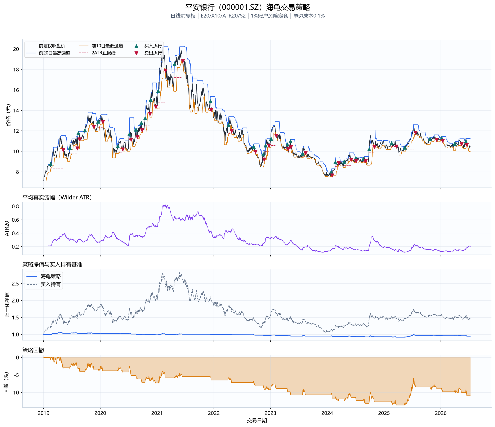
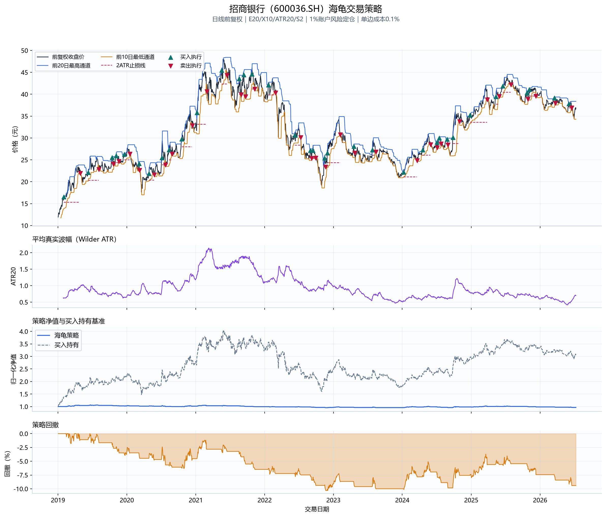
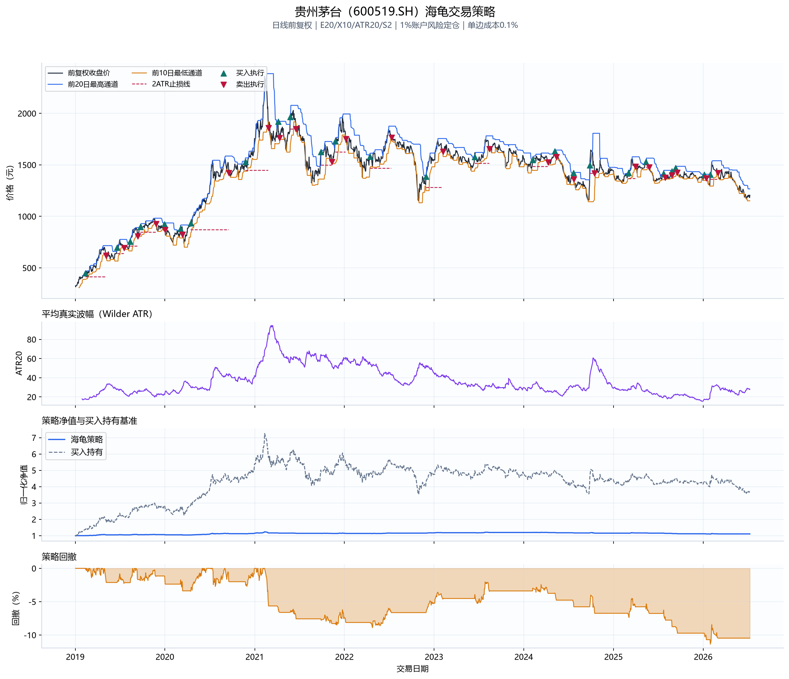
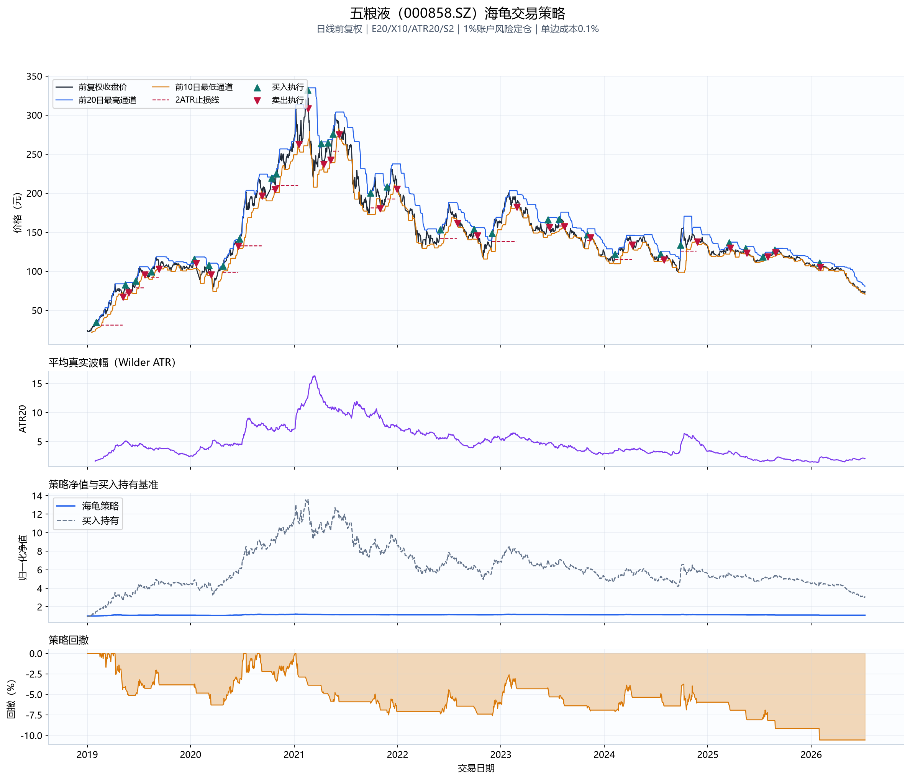
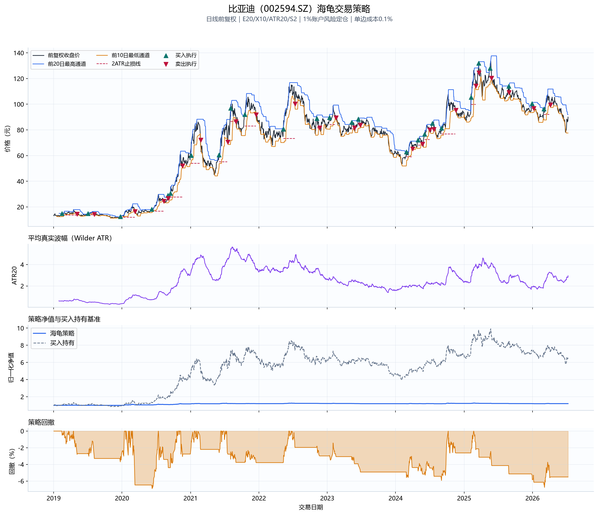
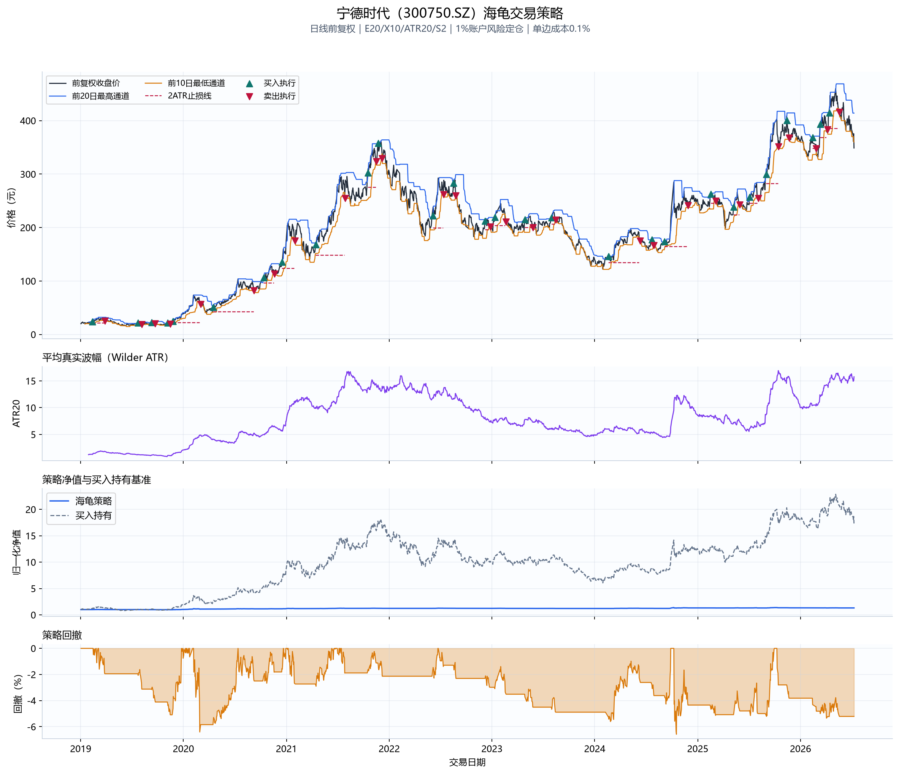
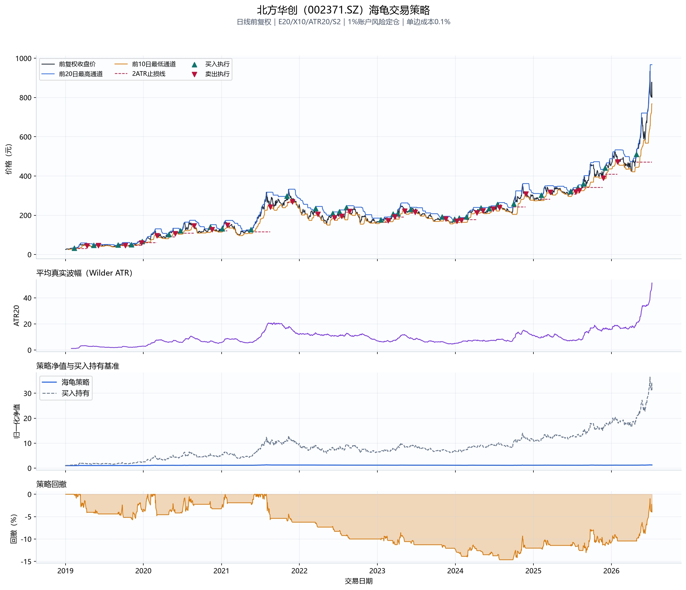
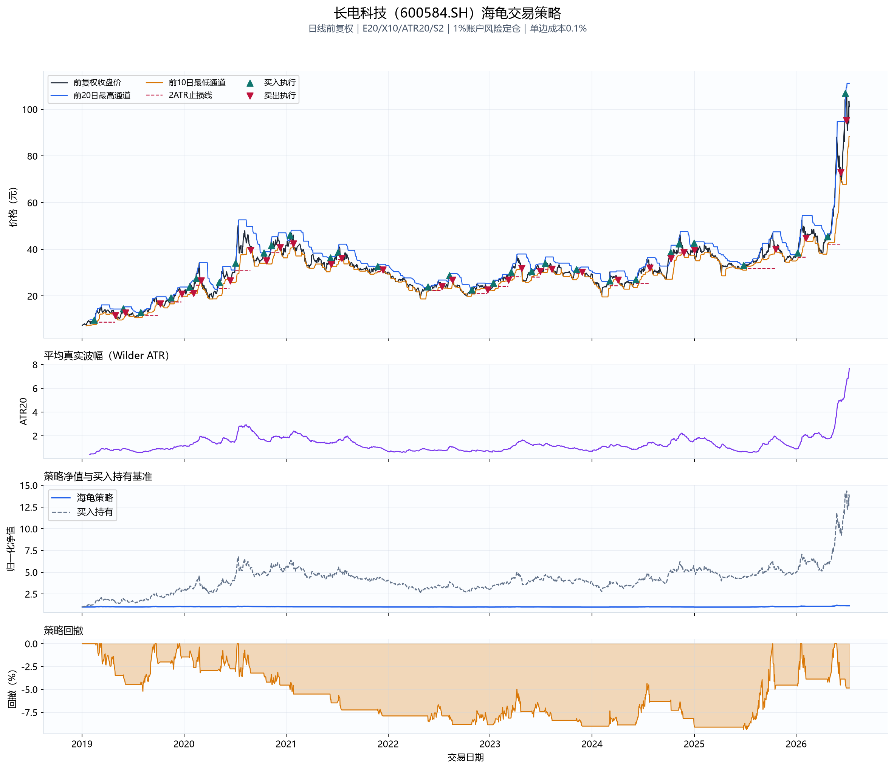
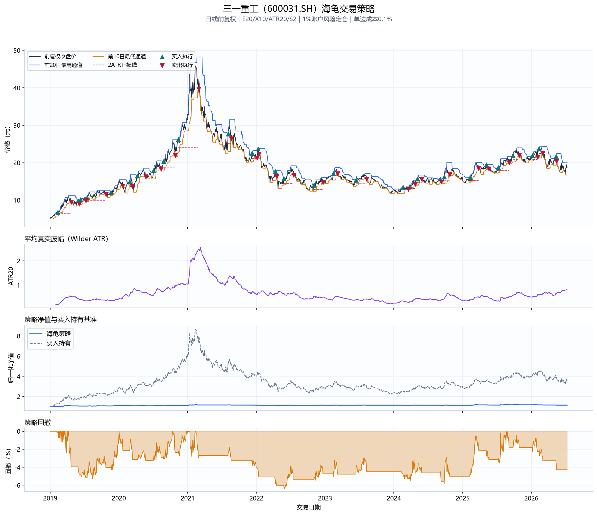
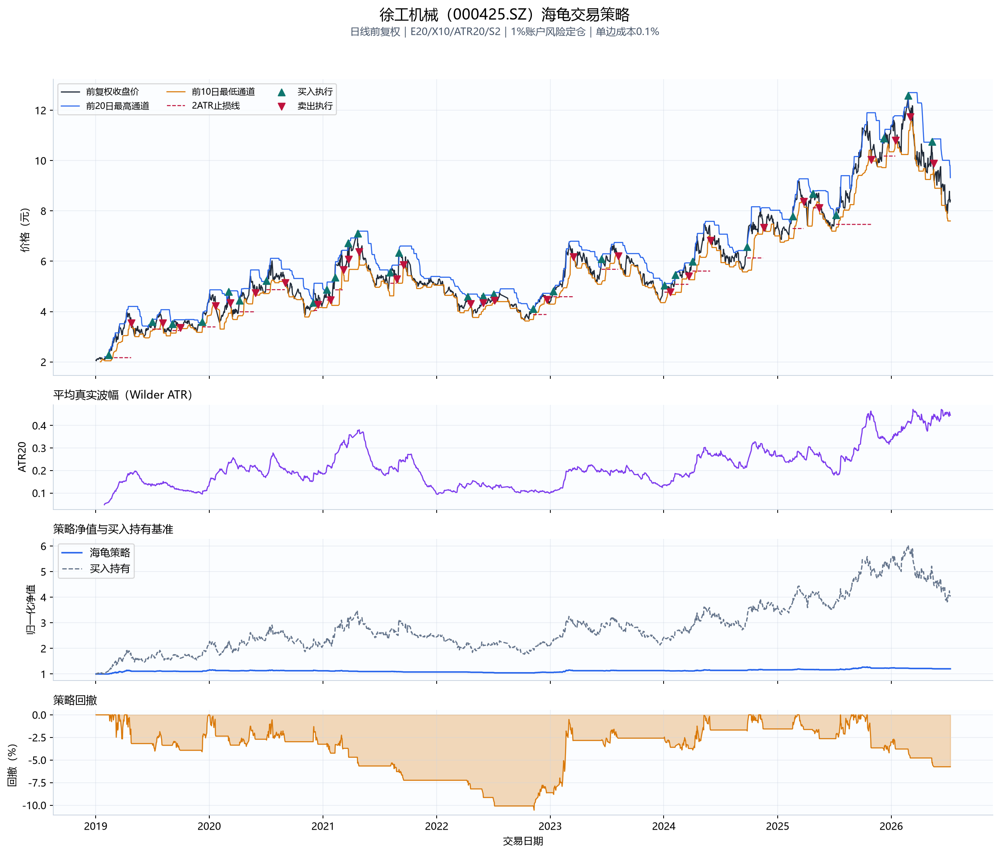

高低点通道
突破前20日最高通道入场，跌破前10日最低通道退出，用价格行为确认趋势。
用高低点通道识别趋势，以Wilder ATR确定止损和仓位，并通过样本外回测观察参数与股票差异。
突破前20日最高通道入场，跌破前10日最低通道退出，用价格行为确认趋势。
真实波幅同时考虑日内波动和跳空，为止损距离和仓位规模提供统一风险尺度。
每笔计划风险为账户权益的1%，高波动股票自动减少股数，避免固定满仓。
收盘价首次突破截至前一日的20日最高通道；下一交易日开盘按ATR风险预算买入。
收盘价跌破10日最低通道，或持仓日触及入场价下方2ATR止损线；跳空时按开盘价处理。
回测假设：只做多、不加杠杆、不加仓；允许教学用小数股；单边成本0.1%；普通通道信号次日执行。
日策略收益复利后的期末总回报，展示最终收益规模。
净值相对历史最高点的最大跌幅，衡量策略最难承受的损失阶段。
日均收益相对波动率的比例并按252日年化，衡量风险调整后表现。
| parameter | 收益中位数 | 夏普中位数 | 回撤中位数 | 正收益比例 | 完成交易中位数 |
|---|---|---|---|---|---|
| E40/X20/ATR20/S2 | 2.85% | 0.299 | -5.85% | 70.00% | 6.0 |
| E10/X5/ATR14/S1.5 | 3.75% | 0.298 | -7.24% | 60.00% | 17.0 |
| E20/X10/ATR20/S3 | 1.39% | 0.193 | -4.44% | 60.00% | 11.0 |
| E20/X10/ATR20/S1.5 | 2.12% | 0.187 | -8.03% | 60.00% | 12.0 |
| E20/X10/ATR20/S2 | 0.61% | 0.081 | -5.83% | 70.00% | 11.0 |
| E55/X20/ATR20/S2 | -0.73% | -0.059 | -5.46% | 40.00% | 6.0 |
参数结论：E40/X20/ATR20/S2 的跨股票中位夏普最高，但与其他组合差距有限，不应据此认定未来最优。
| 股票 | 行业 | 策略回报 | 买入持有 | 最大回撤 | 夏普 | 完成交易 | 胜率 | 平均资金暴露 |
|---|---|---|---|---|---|---|---|---|
| 长电科技 | 半导体 | 15.62% | 242.63% | -5.26% | 0.926 | 9 | 55.56% | 6.71% |
| 北方华创 | 半导体 | 9.21% | 345.29% | -4.10% | 0.649 | 12 | 41.67% | 8.82% |
| 徐工机械 | 工程机械 | 6.25% | 71.83% | -5.75% | 0.554 | 10 | 40.00% | 7.72% |
| 宁德时代 | 新能源汽车 | 8.45% | 141.26% | -6.58% | 0.523 | 11 | 45.45% | 7.34% |
| 招商银行 | 银行 | 0.65% | 68.94% | -5.91% | 0.085 | 13 | 46.15% | 10.50% |
| 三一重工 | 工程机械 | 0.57% | 46.37% | -4.28% | 0.077 | 12 | 33.33% | 7.42% |
| 比亚迪 | 新能源汽车 | 0.55% | 41.42% | -6.76% | 0.075 | 11 | 45.45% | 5.51% |
| 平安银行 | 银行 | -0.27% | 32.55% | -5.35% | -0.002 | 12 | 25.00% | 12.48% |
| 五粮液 | 食品饮料 | -3.91% | -42.12% | -7.08% | -0.468 | 8 | 25.00% | 3.62% |
| 贵州茅台 | 食品饮料 | -7.32% | -24.29% | -9.16% | -0.967 | 11 | 18.18% | 5.12% |
阅读重点：长电科技 的默认参数样本外夏普最高；股票间结果分化说明海龟策略更适合多标的分散，而不是单股确定性预测。










趋势持续、流动性较好、可以跨股票分散，并能严格执行风险预算和止损的场景。
窄幅震荡、频繁跳空、涨跌停或成交受限的个股；股票池也存在幸存者偏差。
本页使用前复权日线、固定成本和小数股教学假设，结果用于策略研究演示，不构成投资建议。